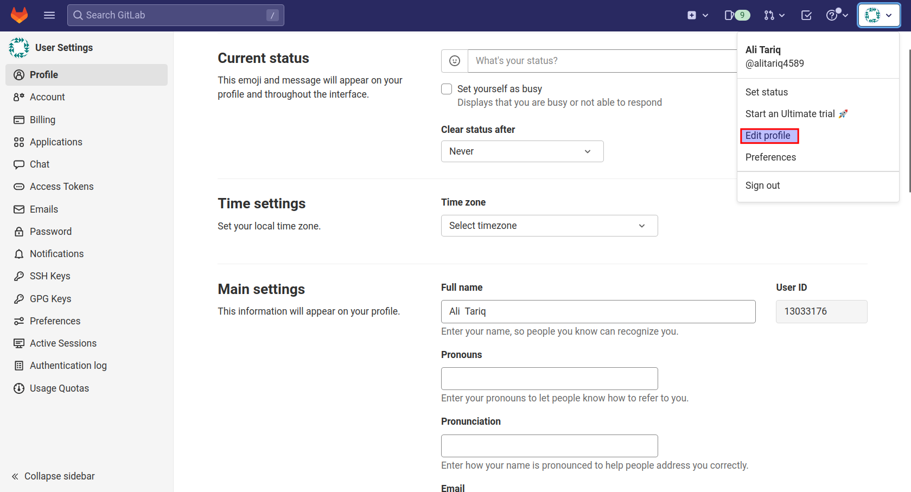

Integrating GitLab with Jenkins
This documentation will cover how to create an integration between jenkins and GitLab. This will allow users to trigger jenkins job when a merge request or a push is detected in GitLab.
Pre-requisites
- GitLab plugin
- Git plugin
- GitLab repository with owner's credentials
Configuring Jenkins System
First jenkins needs to be configured.
- Go to
Dashboard > Manage Jenkins > Configure System - Scroll down to
Gitlabsection -
Check
Enable authentication for '/project' end-point -
Enter a
Connection name. - Enter
Gitlab host URLashttps://gitlab.com/. In case there is a different domain name, then enter there instead of above url. - In
Credentials, click onAddthen click onJenkins. - In
Kind, selectGitLab API token. - In
API token, enter the gitlab personal access token (this will be obtained below while configuring GitLab). - Click on
Advanced. - Click on
Test Connection. - If everything goes right, it should print
success.
Configuring GitLab
- Click on profile avatar in the top right.
- Click on
Edit profile.

- Click on
Access Tokens. - Create a new personal access token and copy it (this is the GitLab API token used in above section
Configuring Jenkins System). - Go to repository settings.
- On left-side pane, select
Webhooks. - Enter
GitLab webhook URL(this is explained below in next section). - Enter
Secret Token(this is explained in the below section). - Check desirable trigger options.
- Click
Add webhook.
Configuring Jenkins Job
- Create a jenkins job.
- On job configuration page, scroll down to
Source Code Management. - Select
Git. - In
Credentials, add the owner credentials of GitLab repository. This will beUsername and Password. - Select the appropriate branch (generally it is
main). - Scroll down to
Build Triggers. - Check
Build when a change is pushed to GitLab. There will also be aGitLab webhook URL. This is needed in GitLab. This URL will be called asWebhook URL. - Click on
Advancedin the same option, then scroll down and generate a secret token. This token is also needed. This token will be called asSecret Token. - Scroll down to
Post-build Actionsand selectPublish build status to GitLab. - Click on
ApplyandSave.
Now whenever there will be a push (or whatever build trigger option is set in jenkins and gitlab webhook), specified jenkins job will be triggered.